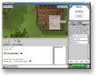

Wotlas ( Wheel Of Time - Light And Shadow ) is a free software available under the GNU General Public License. It's an online virtual community based on Robert Jordan's Wheel of Time books. Written 100% in Java, wotlas uses 2D graphics, enhanced communication systems and an hybrid client-server approach.
Click here for an overview of the Wotlas project.

20 May 2002
Wotlas 1.3 has been released !
...and can now be installed via Java Web Start ! So it'll be easier for you to install and easier for us to maintain. Click here to go to the Download page.
This new version fixes some bugs, adds new chat commands and a brightness filter that improves the graphical quality of the game ( screenshot below ). The main changes are internal to wotlas :- we reorganized our code to support Java Web Start
- we enhanced our server's code with Java 1.4's interface detection.
- we improved our server's administration setup.
- we added bots support.
- we added in-game menus ( right click )For wotlas 1.4 we are working on One Power effects, books, door keys, player inventory, more complex bots, and last but not least XM musics.

Wotlas Client 1.3
(Windows)
Our AliceBot bots have started to appear in wotlas... To meet them just connect on your favorite wotlas server, you don't need to install any patch. The bot feature is only server-side, we'll release the new server code v1.2.4 soon.
Also two developers ( from England and France ) and a musician/composer joined our team. They'll help us to continue this project. Finally a new documentation on wotlas is available here.
The v1.2.3 patches ( client & server ) are available here. They correct a few bugs users found in v1.2.2 . Our servers will be upgraded today to the v1.2.3 code level. Because v1.2.3 and v1.2.2 are incompatible we'll try to keep one wotlas server v1.2.2 running for some time.
This is the last v1.2.x patch we release. We are already working on bots for v1.3. Our bots will use the AIML technology ( www.alicebot.org ), so they'll be able to chat with you just like other players. We'll try to develop different personalities for each of our characters... Aiel, Aes Sedai, etc...
The v1.2.2 packages have been released ! This new version adds a new map ( Emond's Field ) a macros plug-in and small other features ( screenshot below ). The main changes are internal to wotlas : we reorganized some parts of our code to make them pluggable. For example, our wotlas client now supports the use of plug-ins.
If you have the v1.2 wotlas client there is a patch available for you. For other 1.2.2 packages click here.
Wotlas Client 1.2.2
The v1.2 packages have been released. If you want to play wotlas click on the image above and download the wotlas-client-v1.2 package. Our game servers have been updated with the v1.2 code. If you want to host a wotlas server download the wotlas-server-v1.2 package.
The wotlas project is one year old ! We would like to thank all the people that encouraged us, helped us, gave us new ideas, or simply visited the game or joined the community. We will continue to improve our program and add new features.
We will release wotlas v1.2 in less than two weeks. It will contain new characters ( Warders, Younglings, Children of the Light, Wolf Brother, Asha'man, Dark One ), new maps ( Shayol Ghul, White Tower Hall ), new chat features and a Lie manager. As for the other main updates, we also improved our web server connection system, setup wizard and 2D graphics engine.
 Wotlas Client 1.2 - Setup |
 Wotlas Client 1.2 - Game |
Other images have also been added to the Screenshot section.
We are preparing a wotlas v1.2 for this month. New maps have been created ( White Tower entrance, Shayol Ghul, see them here ). We are working on a map of the White Tower's hall and some new interaction features.
Wotlas has been tested successfully under Linux... (see the screenshot below). Finally, you may have witnessed that our game server encountered network problems in january ( it doesn't have any fixed IP ). It should work better now.
Happy New Year 2002 ! To start this year we release a new version of our 2D graphic engine written in Java. A package for developers is available here. It contains the full source of the 2D engine, an API overview and documentation, build scripts, its JAR file and also a small demo.
We also release a new patch for both wotlas client & server v1.1. It adds some new features ( chat commands ), corrects some bugs and contains the new version of our 2D engine.